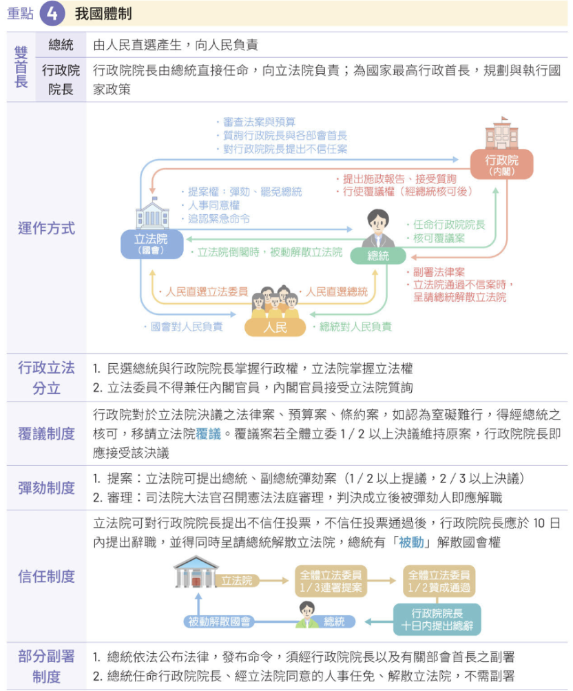
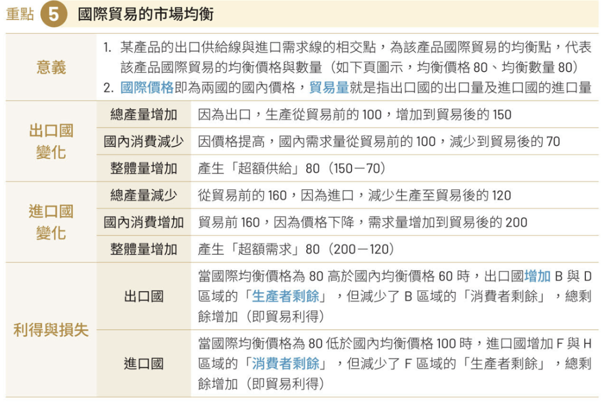
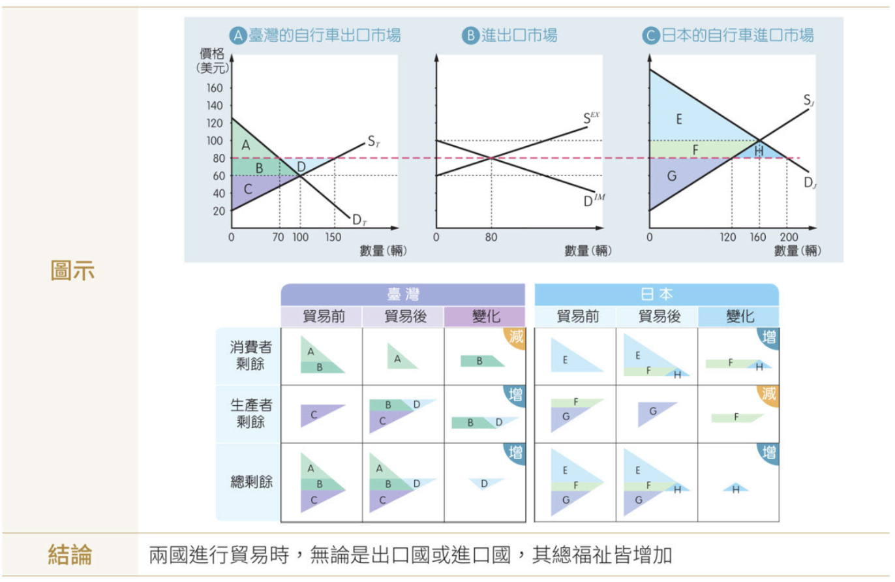

115 學測公民與社會高頻考點精粹講義
涵蓋單元：所有權與公平正義、行政程序法、政府體制與我國體制、選舉制度、外部性與市場失靈、國際貿易市場均衡
主題一：所有權、社會化原則與積極平權措施 憲法與民法核心
1. 所有權社會化原則
- 核心內涵：政府為增進公共利益，得依法對個人所有權進行合理限制。
- 實例：興建捷運、高鐵等公共建設而依法徵收人民土地。
2. 群體權利與積極平權措施
- 法律基礎（司法院釋字第 485 號解釋）：《憲法》第 7 條平等原則保障的是實質平等而非機械形式平等；立法機關可斟酌事物性質差異為合理差別對待。
- 核心主張：
- 以「不同情況給予不同對待」作為公平正義另一標準。
- 給予結構弱勢群體（族群、性別、性傾向、身心障礙者等）更多資源，匡正不利處境。
- 制定公共政策與分配資源時，考量群體差異性，採行積極平權措施（積極性差別待遇）。
- 政策實例：
- 原住民族參政權：突破單純「一人一票、票票等值」限制，設定原住民立委席次。
- 原住民族土地正義：開發或劃設原住民族傳統領域，須取得原住民族同意。
3. 《民法》所有權的意義與特性
| 面向 | 概念／特性 | 法律內涵與實例 |
|---|---|---|
| 意義 （完全物權） |
積極權 | 所有權人於法令限制內，有自由使用、收益、處分標的物之權利。 |
| 消極權 | 所有權人於法令限制內，有排除他人干涉之權利。 | |
| 特性 | 直接支配性 | 所有權人可依意思直接支配標的物（如：使用自己的手機）。 |
| 絕對性（對世性） | 可對「任何人」主張所有權（不同於債權的「相對性」）。 | |
| 排他性 | 一物一權主義：同一標的物不會同時存在兩個所有權，且可排除他人干涉。 | |
| 優先性 | 除法律另有規定外，所有權（物權）效力優先於債權（如：先訂買賣契約取得債權，但後訂契約並完成所有權移轉者，由取得所有權者取得標的物）。 |
⚠️ 易錯觀念／大考陷阱
- 物權絕對性 vs. 債權相對性：所有權屬物權，具有「對世性／絕對性」；買賣契約產生的請求權屬債權，僅具「相對性」。
- 形式平等 vs. 實質平等：積極平權措施看似「差別待遇」，但目的在消除結構性不平等，符合釋字第 485 號解釋之實質平等。

主題二：行政程序的重要性 公法必考
定義：為達實質正義，行政行為須先有正當程序。正當行政程序涵蓋民主程序、公正程序、公開程序三大原則。
| 程序原則 | 核心內涵 | 具體制度與學測實例 |
|---|---|---|
| 民主程序 | 國家權力發動前，應取得被統治者或其代表同意／參與，並給予利害關係人參與機會。 |
• 陳述意見：不利處分前給予陳述機會（如：學校記過前通知申訴機會）。 • 聽證：公開、言詞辯論，程序嚴格，結果具有約束主管機關效力，主管須說明採納或不採納理由。 • 公聽會：蒐集民意、邀當事人／利害關係人／專家座談，程序較聽證寬鬆。 |
| 公正程序 | 行政行為不得偏頗或恣意，恪遵差別待遇禁止原則。 |
• 組織合法性：依法組成，確保多元與專業觀點（如：行政院各部會委員會單一性別比例不得低於 1/3；高中校務會議學生代表不得少於 8%）。 • 迴避制度：公務員涉利益衝突時應迴避（含自行迴避、申請迴避、命令迴避；涉及本人、配偶、前配偶、四親等內血親、三親等內姻親等）。 • 禁止程序外接觸：除職務必要外，不得與當事人或利益代表為程序外接觸。 |
| 公開程序 | 保障人民知的權利，避免黑箱作業（依法核定國家機密等例外）。 |
• 政府資訊公開：依法公開與人民權益相關資訊。 • 通知當事人：事前預告、事後告知決定結果與救濟途徑（如：拆除危樓通知書載明處分、法律依據與救濟途徑）。 • 閱覽卷宗：利害關係人主張或維護法律上利益必要時，得申請閱覽、抄寫、複印或攝影。 |
⚠️ 易錯觀念／大考陷阱
- 聽證 vs. 公聽會：聽證較接近司法程序、採公開言詞辯論、結果具約束力；公聽會則以座談蒐集意見為主，程序較寬鬆。

主題三：總統制與我國政府體制 憲政體制比較
1. 總統制（以美國為例）核心特徵
- 精神與運作：民選總統握行政權、民選國會議員握立法權，各自向人民負責。
- 實權元首：總統握有實權、負最高政治責任，為國家元首兼最高行政首長，公布法律不需要部會首長副署。
- 行政立法分立：任期固定，總統不能解散國會，國會亦無不信任投票；國會議員不得兼任部會首長；國會以預算、人事同意權、彈劾權制衡總統。
- 否決權（覆議權）：法案送達 10 日內退回國會，參、眾兩院須各以 2/3 多數議決才能推翻否決。
- 彈劾制度：針對總統違法行為，眾議院 1/2 多數提彈劾案，參議院 2/3 以上同意則解職。
2. 我國政府體制運作重點
雙首長分工
總統民選向人民負責；行政院長由總統直接任命、向立法院負責，為最高行政首長。
覆議制度
行政院認窒礙難行，經總統核可移請立法院覆議；全體立委 1/2 以上維持原案，行政院長應接受。
彈劾制度
立法院提出總統、副總統彈劾案（1/2 以上提議、2/3 以上決議），由司法院大法官組成憲法法庭審理，成立即解職。
不信任案與解散
立法院對行政院長提不信任案（1/3 連署提案、1/2 贊成通過），院長應於 10 日內辭職，並得呈請總統被動解散立法院。
部分副署制度
總統公布法律、發布命令須經行政院長及有關部會首長副署；但任命行政院長、經立法院同意之人事任免、解散立法院不需副署。
3. 美國總統制 vs. 我國體制關鍵差異
| 比較項目 | 美國總統制 | 我國政府體制 |
|---|---|---|
| 行政首長結構 | 單一實權元首（總統兼最高行政首長） | 總統與行政院長雙首長運作，行政院長對立法院負責 |
| 國會解散與不信任 | 無 | 有不信任投票制度，且立法院倒閣時總統可被動解散立法院 |
| 副署制度 | 無 | 部分副署制度（依法公布法律、發布命令需副署；任免閣揆、解散立法院等免副署） |
| 總統彈劾審理機關 | 眾議院提案、參議院審理 | 立法院提案、司法院大法官召開憲法法庭審理 |


主題四：選舉制度與政黨體系影響 115 學測高頻
1. 比例代表制重點
- 規則：又稱政黨比例代表制、名單比例代表制；各黨列候選人名單，選民投給政黨，依得票率按比例分配席次，並設選舉門檻。
- 優缺點：席次與政黨實力相符、能反映多元利益（有利小黨）；但易造成小黨林立，導致議事效能低落或政局不穩。

2. 各類選舉制度對小黨與政黨體系之影響
| 選舉制度類型 | 對小黨與政黨體系之主要影響 | |
|---|---|---|
| 多數決制 | 單一選區相對多數決 | 不必過半、勝者全拿；得票與席次易不成比例，有代表性／正當性疑慮；不利小黨，易形成兩黨制。 |
| 複數選區相對多數決 | 較單一選區對小黨有利，但易有同黨相爭，且較易出現偏激政策與競選手段。 | |
| 絕對多數決 | 不利小黨，易形成多黨聯盟。 | |
| 比例代表制 | 較能反映不同利益與意見，有利小黨生存；但易小黨林立、形成多黨制，也可能出現偏激極端訴求。 | |
| 混合制 | 並立制 | 若單一選區席次多於比例代表制席次，不利小黨、有利大黨。 |
| 聯立制 | 政黨得票率與席次分配比例相符，較有利於小黨生存。 | |

主題五：外部性與市場失靈 經濟學必考圖表
| 比較項目 | 外部成本（負外部性） | 外部效益（正外部性） |
|---|---|---|
| 意義 | 經濟活動對他人產生負面影響。 | 經濟活動對他人產生正面影響。 |
| 計算公式 | 外部成本＝社會成本－私人成本 （私人供給線 $S$ 到社會供給線 $S^*$ 垂直距離） |
外部效益＝社會效益－私人效益 （私人需求線 $D$ 到社會需求線 $D^*$ 垂直距離） |
| 未考量時對價量影響 | 產量過多（$Q > Q^*$）、價格偏低（$P < P^*$）。 | 消費量過少（$Q < Q^*$）、價格偏低（$P < P^*$）。 |
| 社會福利與無謂損失 | 社會福利＝總效益－總成本；未考量時產生無謂損失 $B$（社會福利由 $A$ 降為 $A - B$），造成市場失靈。 | 未考量時產生無謂損失 $L$（社會福利由 $I + K + L$ 降為 $I + K$），造成市場失靈。 |
| 政府補救措施 | 透過課稅或直接管制將外部成本內部化（如：對污染開罰或課稅）。 | 透過補貼增加行為者從事外部效益誘因（如：民眾種花美化市容給予補貼）。 |
💡 圖表判讀口訣
- 外部成本看供給線（$S \rightarrow S^*$）：未內部化時「多產（$Q > Q^*$）、低價（$P < P^*$）」，政府用課稅／管制矯正。
- 外部效益看需求線（$D \rightarrow D^*$）：未內部化時「少消費（$Q < Q^*$）、低價（$P < P^*$）」，政府用補貼矯正。


主題六：國際貿易的市場均衡 貿易利得必考
- 均衡意義：出口供給線與進口需求線交點代表國際貿易均衡價格與數量；貿易量即出口國出口量與進口國進口量。
- 核心結論：兩國進行貿易時，無論是出口國或進口國，其總福利（總剩餘）皆增加（即產生貿易利得）。
| 國家類型 | 貿易後價量變化（以講義範例為例） | 剩餘與總福利變化 |
|---|---|---|
| 出口國 （如：臺灣自行車） |
國際均衡價格（80）高於國內均衡價格（60）： • 總產量增加（100 → 150） • 國內消費減少（100 → 70） • 產生超額供給 80（150－70） |
• 生產者剩餘增加（＋$B+D$） • 消費者剩餘減少（－$B$） • 總剩餘增加（＋$D$） |
| 進口國 （如：日本自行車） |
國際均衡價格（80）低於國內均衡價格（100）： • 總產量減少（160 → 120） • 國內消費增加（160 → 200） • 產生超額需求 80（200－120） |
• 消費者剩餘增加（＋$F+H$） • 生產者剩餘減少（－$F$） • 總剩餘增加（＋$H$） |

